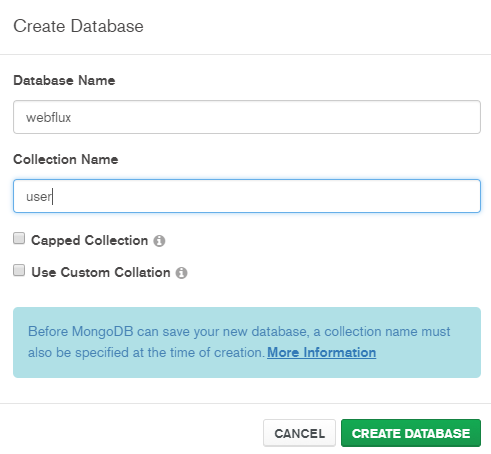
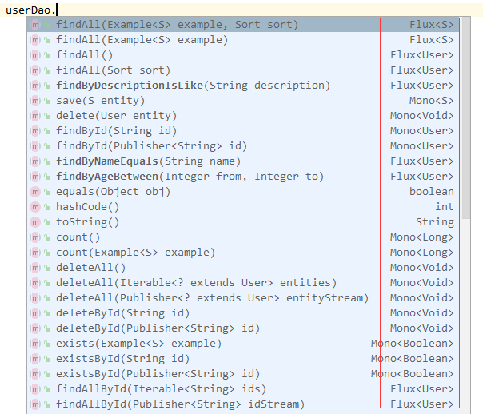

在 Spring Boot 2.0 WebFlux编程 一节我们大致了解了WebFlux的用法，这节我们将结合Mongo DB在WebFlux的架构下实现增删改查样例。和 Spring Boot整合Mongo DB 不同的是，我们使用的是Reactive Mongo DB依赖，所有增删改查方法返回值类型为Flux或者Mono。
项目准备
新建一个Spring Boot项目，版本为2.1.3.RELEASE，并引入webflux和reactive mongodb依赖：
1 | <dependency> |
要开启Reactive Mongo DB的相关配置，需要在Spring Boot启动类上添加@EnableReactiveMongoRepositories注解：
1 |
|
接着在配置文件application.yml里配置Mongo DB连接：
1 | spring: |
使用的是webflux数据库，所以需要在Mongo DB里新建一个webflux数据库（并创建user文档/表，以供待会使用）：

创建User实体类:
1 | (collection = "user") |
简单增删改查
创建UserDao接口，继承自ReactiveMongoRepository：
1 |
|
和 Spring Boot整合Mongo DB 不同的是，我们继承的是ReactiveMongoRepository而非MongoRepository，它所提供的方法都是响应式的：

在UserService里通过UserDao定义简单增删改查方法：
1 |
|
大致上和 Spring Boot整合Mongo DB 中的UserService差不多，不同的是返回值类型为Flux或者Mono，即它们是响应式非阻塞的方法。
编写RESTfulUserController：
1 |
|
对于返回值为Flux<T>类型的方法，推荐定义两个一样的方法，一个以普通形式返回，一个以Server Sent Event的形式返回。对于修改和删除，如果需要修改和删除的用户不存在，我们返回404。
对于Flux和Mono的操作，在 Spring Boot 2.0 WebFlux编程 一节中已经介绍过了，这里就不再赘述了。
排序与分页
在 Spring Boot整合Mongo DB 一节中，我们通过MongoTemplate实现了排序与分页。与MongoTemplate对于的响应式的对象为ReactiveMongoTemplate，所以我们照葫芦画瓢，仿照MongoTemplate的写法来实现：
1 | /** |
之所以拆分是因为没找到与PageableExecutionUtils类的getPage方法类似的方法，如果是响应式的话，返回值类型应该是Mono<Page<User>>，不懂大家有没别的更好的实现方法？
源码和PostMan测试样例链接：https://github.com/wuyouzhuguli/SpringAll/tree/master/58.Spring-Boot-WebFlux-crud